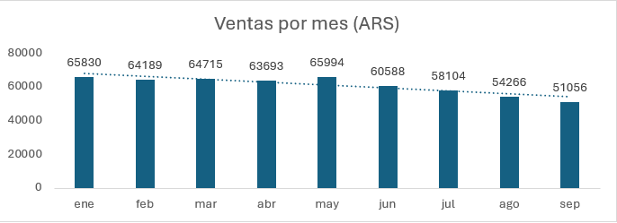

Las ventas con ARS disminuyen con el paso de los meses en las sucursales. Desde enero del presente año, hasta septiembre, la cantidad de ventas ARS ha disminuido en un 22.44% (de 65,830 a 51,056). Esto se debe a un factor de disponibilidad de beneficios de los clientes asegurados en sus pólizas, los cuales van disminuyendo conforme pasan los meses del año. No se pudo evidenciar en los estudios realizados en el área que esta reducción por estacionalidad sea considerada para definir el HeadCount de los auxiliares de ARS.
